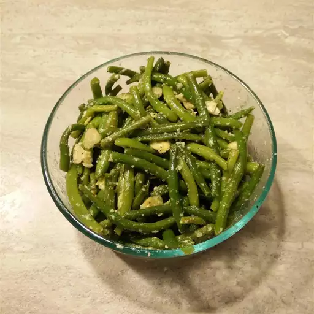

Easy Garden Green Beans

Description
These flavorful steamed green beans are simply dressed for an easy side dish that practically cooks itself while you get the rest of the meal together.
Ingredients
- 1 pound fresh green beans, trimmed
- 3 tablespoons olive oil
- 3 tablespoons freshly grated Parmesan cheese
- 2 tablespoons white wine vinegar
- 3 cloves garlic, sliced
- 1 pinch salt
- 1 pinch ground black pepper
- 2 tablespoons chopped fresh parsley
Steps
- Gather all ingredients.
- Place a steamer insert into a saucepan and fill with water to just below the bottom of the steamer. Bring water to a boil. Add green beans, cover, and steam to your desired degree of tenderness, about 5 minutes.
- Transfer steamed green beans to a serving bowl. Add olive oil, Parmesan cheese, white wine vinegar, garlic, salt, and pepper; toss until evenly coated. Let stand for 10 minutes.
- Remove garlic slices and garnish with parsley before serving.
- Serve and enjoy!